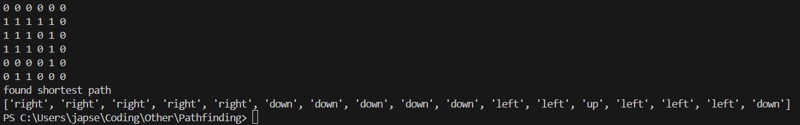
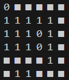
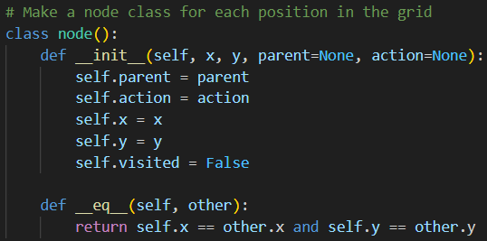
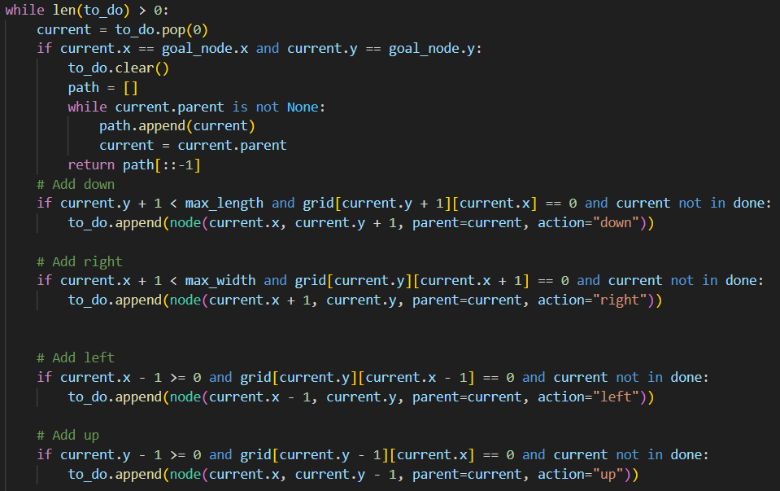
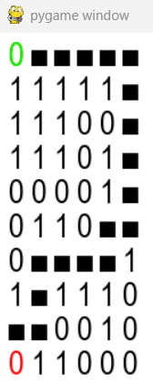
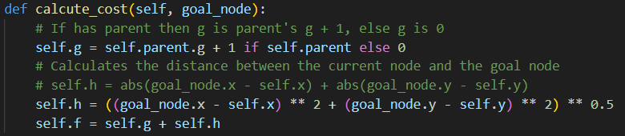

Python A-Star
- Category: Algorithms
- Project date: 02 February, 2025
- Time: 4 weeks
- Made with: Python
Pathfinding!
In this project I made an A-Star pathfinding algorithm in Python. I made this because I wanted to learn more about pathfinding and I chose the A-star algorithm because it is one of the most optimized pathfinding algorithms. This was my first real Python project.
Week 1-2
In the first week I made the a grid with a 2D array. Then I made a breadth first algorithm to find the shortest path from a start point to the end point. First I displayed the path found with directions in the console, and at the end of the week I made the grid visual in the console with the path found.



Here you can see how the main logic works. I check around the current node for any walkable nodes, and put them in a 'to-do' list. I made a node class for ever location on the grid so I can easily get information about the node like if its already walked or if its walkable.

Week 3
In the third week I used Pygame to visualize the grid better. This was quite a challenge since I never worked with Pygame before. But eventually I got it working. Also I added color to the start and end.

Week 4
In the fourth week I evolved the breadth first algorithm to the A-star algorithm. This was easier than expected since I already had a good base with the breadth first algorithm. The only thing I had to do was add a heuristic to the algorithm to make it A-star.
I also made maps for the algorithm to run on. So you can see how it performs on different maps.
